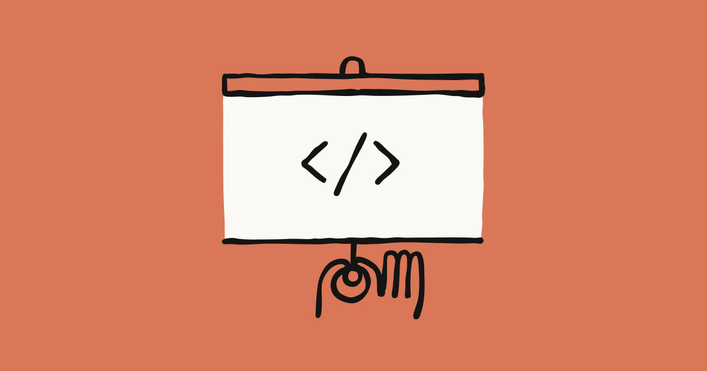
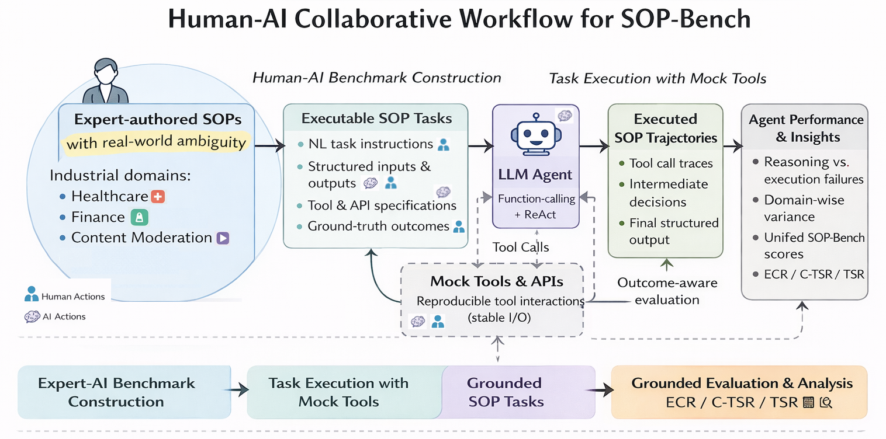
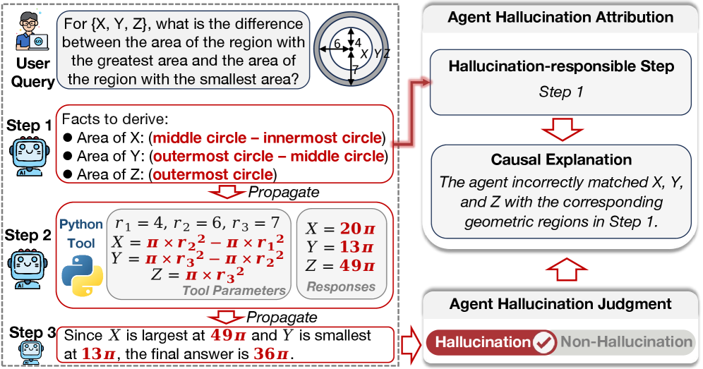

Executive Summary
2024년 Daniel Miessler는 "모든 기업은 알고리즘의 그래프"라고 선언했다. 2026년 5월 28일, Anthropic은 그 그래프에 실행 엔진을 달았다. Claude Code Dynamic Workflows는 단일 실행에 최대 1,000개 서브에이전트를 오케스트레이션하고, adversarial verification으로 결과를 교차 검증하며, 체크포인트 기반 재개로 장기 태스크를 안정적으로 수행한다. Bun 프로젝트의 Zig-to-Rust 포팅(96만 줄, 6일, 99.8% 테스트 통과)은 이 아키텍처가 단일 에이전트 루프로는 도달할 수 없는 규모에서 작동함을 실증했다.
그러나 도구만으로는 성과가 나지 않는다. McKinsey에 따르면 AI를 도입한 기업의 88% 중 실질 재무 성과를 내는 곳은 5.5%에 불과하다. SkillOpt(Microsoft, 2026)은 모델 가중치를 건드리지 않고 자연어 스킬 문서만 최적화하여 +19~25pp 성능 향상을 달성했다. 이는 "알고리즘(SOP)의 품질이 모델보다 중요하다"는 Miessler 테제의 직접적 실증이며, Claude Code의 "CLAUDE.md로 구조를 잡고 런타임에 동적으로 서브에이전트를 생성"하는 하이브리드 접근이 결정론과 유연성의 최적 절충점임을 보여준다.
인간의 역할은 사라지는 것이 아니라 재정의된다. Gallup에 따르면 전 세계 직장인 중 진정으로 몰입하는 사람은 21%이고, Miessler는 업무의 4%만이 중위 수준 이상의 창의성을 요구한다고 분석했다. 나머지 96%의 업무가 알고리즘화될 때, 인간에게 남는 것은 "무엇을 풀지 결정하는 판단력", "새로운 제품을 구상하는 창의력", "워크플로우를 설계하고 최적화하는 오케스트레이션 역량"이다. 이 전환에서 데이터 품질은 SOP 정확도를 결정하는 핵심 변수다.
편집자의 노트. 기업 업무가 알고리즘의 그래프로 분해되고, 그 그래프 위에 1,000 서브에이전트가 흐른다는 그림. 이 그림이 그려지는 한가운데 데이터 품질이라는 한 변수가 있다. 페블러스의 자리는 워크플로우 그래프의 노드마다 흐르는 데이터의 품질을 진단하는 일이다. 이 글은 그 그림과 그 자리를 이어 보려는 시도다.
주요 수치
출처: Anthropic Engineering, Bun Issue #25425, McKinsey 지식 노동 분석, Gartner Data Quality Cost Estimate.
1,000
서브에이전트/실행
Anthropic 공식 (2026.05)
96만 줄
6일 / 99.8% 통과
Bun Rust 포팅 성과
88% / 5.5%
도입률 / 실질 성과
McKinsey AI ROI 간극
$12.9M
기업당 연간 품질 비용
Gartner (2024~2025)
"회사는 알고리즘의 그래프다" — Miessler 테제 해부
2024년, 보안 연구자이자 Fabric 프로젝트 창시자인 Daniel Miessler는 하나의 도발적 명제를 제시했다. "기업은 알고리즘의 그래프(graph of algorithms)이며, 대부분의 직원은 그 알고리즘을 실행하는 노드에 불과하다." 이 주장은 조직 이론의 관습을 정면으로 거스르는 것이었지만, 2026년 현재 학술적 증거가 이를 뒷받침하기 시작했다.
알고리즘이 모델을 이긴다
SkillOpt(Microsoft Research, 2026)은 52개의 (모델, 벤치마크, 하네스) 구성 전체에서 최고 또는 동률 성적을 달성했다. 핵심은 모델의 가중치를 전혀 건드리지 않았다는 것이다. 자연어로 작성된 스킬 문서를 최적화하는 것만으로 +19~25pp의 성능 향상을 이끌어냈다. 이는 "기업 가치는 AI 모델 자체가 아니라 업무 프로세스(알고리즘)의 설계 품질에 의해 결정된다"는 Miessler 테제의 직접적인 학술 증거다.

왜 대부분의 업무가 알고리즘화될 수 있는가
Gallup의 2025 State of the Global Workplace 보고서에 따르면, 전 세계 직장인 중 진정으로 몰입하는 사람은 21%에 불과하다. Miessler는 McKinsey 데이터를 인용하며 "업무의 4%만이 중위 수준 이상의 창의성을 요구한다"고 분석했다. 나머지 96%는 이미 정형화된 절차를 반복하는 것이며, 이것이 바로 알고리즘의 정의다.
Miessler의 테제가 2024년에는 사고 실험이었다면, 2026년에는 SkillOpt의 "+25pp"라는 숫자가 이를 실증으로 전환시켰다. 문제는 이 알고리즘들을 누가, 어떻게 실행하느냐다. 그 답이 Dynamic Workflows다.
Claude Code Dynamic Workflows — 실행 엔진의 등장
2026년 5월 28일, Anthropic은 Claude Code에 Dynamic Workflows를 출시했다. 이는 Skills(2024) → Cowork(2025) → Dynamic Workflows(2026)로 이어지는 에이전트 진화의 세 번째 도약이자, 질적으로 완전히 다른 단계다.

아키텍처의 핵심: 오케스트레이션이 컨텍스트를 대체한다
기존의 AI 코딩 도구들은 "더 큰 컨텍스트 창"으로 대형 코드베이스를 다뤘다. Google Gemini의 100만 토큰 컨텍스트가 대표적이다. Claude Code Dynamic Workflows는 정반대 전략을 택했다. 컨텍스트를 늘리는 대신, 최대 16개의 병렬 서브에이전트가 각자 자기 영역만 담당하고, 총 1,000개의 서브에이전트가 하나의 실행 안에서 오케스트레이션된다.
세 가지 아키텍처 요소가 이 규모를 가능하게 한다. 첫째, JavaScript 기반 오케스트레이션 스크립트가 런타임에 태스크를 분해하고 서브에이전트에 배분한다. 둘째, adversarial verification 계층에서 별도의 에이전트가 다른 에이전트의 결과를 교차 검증한다. 셋째, 체크포인트 기반 재개 기능이 장기 실행 태스크의 안정성을 보장한다.
Bun 포팅: 최초의 대규모 실증
Bun 프로젝트의 Zig-to-Rust 포팅은 Dynamic Workflows의 첫 대규모 성공 사례다. 96만 줄의 코드를 6일 만에 포팅했고, 99.8%의 테스트를 통과시켰다. 다만 이 수치에는 맥락이 필요하다. Bun은 Anthropic이 인수한 프로젝트로 최적의 지원을 받았고, 프로덕션 배포 전 상태이며, 언어 간 마이그레이션이라는 특수한 태스크 유형이다. HN 커뮤니티는 "LLM의 병목은 속도가 아니라 정확도"라고 지적했다. 대규모 코드베이스 감사와 마이그레이션에는 유효하지만, 창의적 설계가 필요한 그린필드 개발로의 일반화는 추가 검증이 필요하다.
경쟁 도구 5종 비교
코딩 에이전트 시장의 선택 기준은 기능이 아니라 워크플로우 단계에 따라 달라진다.
| 도구 | 핵심 강점 | 적합 시나리오 |
|---|---|---|
| Claude Code | 1,000 서브에이전트, adversarial verification | 대규모 마이그레이션, 코드베이스 감사 |
| GitHub Copilot | 팀 거버넌스, PR 리뷰 통합 | 팀 코드리뷰 워크플로우 |
| Cursor | IDE 네이티브, 빠른 반복 | 개인 개발자 생산성 |
| Devin | 비동기 자율 실행, 자체 빌드-테스트 | 기술부채 처리, 비동기 태스크 |
| Amazon Q | AWS 인프라 깊은 통합 | AWS 네이티브 개발 환경 |
국내에서는 NAVER와 Kakao가 "ChatGPT(범용) + Claude Code(개발 전담)"의 이중 스택을 공식 도입했다. Kakao는 2026년 5월 말까지 전 직원 배포를 완료했으며, 동시에 NAVER Agent N, Kakao Kanana 등 자체 에이전트 AI를 2026년 하반기 출시를 앞두고 있어 외산 도구와 국산 에이전트 AI의 경쟁-보완 구도가 형성되고 있다.
SOP의 결정화 — Pseudo-Deterministic Workflows의 실체
"SOP를 작성하기만 하면 AI가 알아서 실행한다"는 낙관론이 있다. 그러나 SOP-Bench(Amazon, 2026)의 데이터는 이를 정량적으로 반박한다. 최선의 에이전트(ReAct Agent)도 평균 48% 성공률에 불과하고, Function-Calling Agent는 27%에 그쳤다. 도구 레지스트리가 커지면 잘못된 도구 호출률이 거의 100%에 육박했다.

"Pseudo"의 범위
워크플로우의 구조(어떤 순서로 어떤 태스크를 실행할지)는 CLAUDE.md와 스킬 파일로 사전 결정되지만, 각 노드의 실행(코드 생성, 분석 등)은 LLM의 확률적 추론에 의존한다. 이 "구조는 결정적, 실행은 확률적" 조합이 pseudo-deterministic이다.
스펙트럼의 양 극단을 보면 이 절충의 의미가 분명해진다. Compiled AI(2026)는 결정론적 코드 생성으로 런타임 토큰 소비를 57배 감소시키고 출력 분산을 0%로 만들었지만, 예상치 못한 상황에 대응하는 유연성을 완전히 포기했다. 반대편에서 AFlow(ICLR 2025 Oral)는 Monte Carlo Tree Search로 워크플로우 자체를 탐색하는 완전 확률적 접근을 취했지만, 출력 분산이 18~75%에 달했다.
Claude Code의 하이브리드 접근 -- "CLAUDE.md로 구조를 잡고 런타임에 동적으로 서브에이전트를 생성" -- 은 결정론의 예측 가능성과 확률적 추론의 유연성을 동시에 확보한다. 스킬 파일로 도구 범위를 제한하여 SOP-Bench가 밝힌 "도구 과잉 호출" 문제를 구조적으로 차단하는 것이 핵심 설계 원칙이다.
데이터 품질이 Workflow 정확도를 결정한다
워크플로우 엔진은 연료(데이터)의 품질만큼만 정확하게 작동한다. McKinsey가 보고한 "88% 도입, 5.5% 성과"의 간극에서 간과된 핵심 변수가 바로 데이터 품질이다. Gartner에 따르면 기업은 데이터 품질 문제로 연간 평균 $12.9M을 소모한다.
오류 전파의 메커니즘
AgentHallu(2026)는 693개 트래젝토리를 분석하여, Planning 단계에서 발생한 환각이 Tool-Use 단계로 체계적으로 전파되는 경로를 밝혀냈다. 워크플로우의 각 노드는 이전 노드의 출력을 입력으로 받는다. 첫 노드에 투입되는 데이터가 부정확하면 오류가 후속 노드로 전파되고 증폭된다.

스킬 품질 관리가 성능 병목이다
Ratchet(2026)의 핵심 발견은 직관에 반한다. LLM이 자동으로 생성한 스킬의 성능 향상은 +0.0pp였지만, 인간이 큐레이션한 스킬은 +16.2pp를 달성했다. 이 16pp의 격차는 스킬의 생성보다 생명주기 관리(퇴역, 정제, 메타스킬)가 훨씬 결정적임을 증명한다. 이 원칙은 데이터 품질 관리에도 정확히 적용된다. 데이터를 쌓기만 해서는 안 되며, 진단하고 정제하고 퇴역시켜야 한다.
DataFlow(2025)는 데이터 품질과 AI 파이프라인을 통합하는 프레임워크를 제안했다. AI-Ready Data의 5가지 차원 -- 정확성, 완전성, 일관성, 출처성, 편향성 -- 은 곧 SOP의 5가지 실행 조건이기도 하다. 워크플로우 각 노드에 흐르는 데이터가 이 5가지 조건을 충족하지 못하면, 아무리 정교한 오케스트레이션 엔진도 정확한 결과를 보장할 수 없다.
인간의 역할 재정의 — 무엇이 남는가
McKinsey는 지식 노동의 60~70%가 자동화 가능하다고 분석했다. Gartner는 2026년 말까지 개발자의 75%가 코드 작성보다 오케스트레이션과 아키텍처에 더 많은 시간을 투자할 것으로 예측한다. 코드를 작성하는 것이 아니라, 코드를 작성하는 에이전트의 SOP를 설계하는 것이 개발자의 새로운 핵심 역량이 된다.
인간에게 남는 세 가지 역할
96%의 업무가 알고리즘화될 때, 인간의 역할은 세 가지로 수렴한다.
- 1. Taste(판단력) — 무엇을 풀지, 무엇을 풀지 않을지 결정하는 능력. 알고리즘은 주어진 문제를 효율적으로 풀지만, 어떤 문제가 풀 가치가 있는지를 판단하지 못한다.
- 2. 신규 제품/서비스 구상 — 기존에 없는 것을 만드는 창의적 도약. SOP가 존재하지 않는 영역에서 SOP를 최초로 설계하는 것은 인간만의 고유 역량이다.
- 3. 워크플로우 설계와 최적화 — 알고리즘의 그래프를 구성하고 각 노드 간 연결을 최적화하는 메타 역량. MUSE-AutoSkill(2026)이 스킬 생명주기(생성-메모리-관리-평가-정제) 전체를 통합한 것처럼, 인간도 워크플로우 전체를 조망하는 시야가 필요하다.
SemiAnalysis에 따르면 GitHub 커밋의 4%가 이미 Claude Code로 생성되고 있다. 이 비율은 빠르게 증가할 것이며, 개발자의 일상은 "코드를 작성하는 시간"에서 "에이전트가 올바르게 작업하고 있는지 감독하는 시간"으로 이동하고 있다.
페블러스가 이 주제에 주목하는 이유
Dynamic Workflows는 기업 업무를 알고리즘의 그래프로 실행하는 엔진이다. 그러나 엔진은 연료의 품질만큼만 정확하게 작동한다. 이 보고서에서 반복적으로 확인된 "데이터 품질 = 워크플로우 정확도"라는 등식은 페블러스의 핵심 사업 영역과 직결된다.
워크플로우 노드의 연료를 진단하다
기업이 자사 업무를 알고리즘의 그래프로 분해하고 Dynamic Workflows로 실행할 때, 각 워크플로우 노드에 흐르는 데이터의 품질이 전체 파이프라인의 정확도를 결정한다. SkillOpt이 증명한 "알고리즘(스킬) > 모델" 원칙에서, 알고리즘의 품질은 결국 입력 데이터의 품질에 의존한다. DataClinic은 이 입력 데이터의 AI-Ready 수준을 정확성, 완전성, 일관성, 출처성, 편향성의 5가지 차원에서 자동으로 진단한다.
검증 계층의 구조적 동형성
Dynamic Workflows의 adversarial verification -- 별도의 에이전트가 다른 에이전트의 결과를 교차 검증하는 메커니즘 -- 은 DataClinic의 자동 품질 감사와 구조적으로 동형이다. 둘 다 "결과를 독립적으로 교차 검증하여 오류를 사전 차단한다"는 동일한 설계 원칙을 따른다. Ratchet이 발견한 "스킬 관리 > 스킬 생성"이라는 원칙이 데이터에도 그대로 적용된다면, 데이터의 생명주기를 관리하는 체계가 워크플로우 성공의 필수 인프라가 된다.
"88% 도입, 5.5% 성과" 간극의 해법
McKinsey가 보고한 이 간극은 네 가지 실무 과제에서 비롯된다. (1) SOP 매핑의 선행 -- 기존 업무를 에이전트가 실행할 수 있는 수준으로 명시화하는 것, (2) 데이터 파이프라인의 품질 감사 -- AI 투입 전 기준선 설정, (3) 인간 감독 포인트 설계 -- 어디에 HITL 검증을 배치할 것인가, (4) 비용 구조 이해 -- "significantly more"인 토큰 소비의 ROI 계산. 이 네 가지 중 두 번째 과제, 데이터 파이프라인의 품질 기준선 설정과 자동 진단은 DataClinic이 직접 해결할 수 있는 영역이다.
앞으로 탐구할 질문
이 보고서가 던지는 핵심 질문은 다음과 같다. SOP-Bench가 밝힌 27~48% 성공률을 끌어올리려면 데이터 품질의 어떤 차원이 가장 결정적인가? Dynamic Workflows의 adversarial verification과 데이터 품질 자동 감사를 통합하면 오류 전파를 어느 수준까지 차단할 수 있는가? 이 질문들은 페블러스가 DataClinic과 DataGreenhouse를 발전시키는 과정에서 지속적으로 탐구해야 할 방향이다.
자주 묻는 질문 (FAQ)
이 보고서를 읽으면서 자주 제기되는 질문들을 정리했다. Dynamic Workflows의 아키텍처적 의미, Bun 포팅 사례의 일반화 가능성, SOP 자동화의 현실적 한계(27~48% 성공률), 토큰 비용 구조, 그리고 한국 기업의 준비 방향까지 다룬다. 기술 선택 이전에 "왜", "얼마나", "어디까지"를 이해하는 것이 엔터프라이즈 AI 도입의 출발점이다.
참고문헌
학술 논문 (arXiv)
- 1.Wang, L. et al. (2023). "A Survey on Large Language Model based Autonomous Agents." arXiv preprint. arxiv.org/abs/2308.11432
- 2.Wu, Q. et al. (2023). "AutoGen: Enabling Next-Gen LLM Applications via Multi-Agent Conversation." arXiv preprint. arxiv.org/abs/2308.08155
- 3.Wang, G. et al. (2023). "Voyager: An Open-Ended Embodied Agent with Large Language Models." arXiv preprint. arxiv.org/abs/2305.16291
- 4.Zhang, J. et al. (2025). "AFlow: Automating Agentic Workflow Generation." ICLR 2025 Oral. arxiv.org/abs/2410.10762
- 5.Agashe, S. et al. (2025). "Agent-S: LLM Agentic Workflow to Automate Standard Operating Procedures." arXiv preprint. arxiv.org/abs/2503.15520
- 6.Liu, Y. et al. (2025). "DataFlow: An LLM-Driven Framework for Unified Data Preparation and Workflow Automation." arXiv preprint. arxiv.org/abs/2512.16676
- 7.Chen, T. et al. (2024). "A Survey on LLM-based Multi-Agent System." arXiv preprint. arxiv.org/abs/2412.17481
- 8.Workflow Survey Team. (2025). "A Survey on Agent Workflow — Status and Future." arXiv preprint. arxiv.org/abs/2508.01186
- 9.Microsoft Research. (2026). "SkillOpt: Executive Strategy for Self-Evolving Agent Skills." arXiv preprint. arxiv.org/abs/2605.23904
- 10.MUSE Team. (2026). "MUSE-AutoSkill: Self-Evolving Agents via Skill Creation, Memory, Management, and Evaluation." arXiv preprint. arxiv.org/abs/2605.27366
- 11.Ratchet Team. (2026). "Ratchet: A Minimal Hygiene Recipe for Self-Evolving LLM Agents." arXiv preprint. arxiv.org/abs/2605.22148
- 12.Compiled AI Team. (2026). "Compiled AI: Deterministic Code Generation for LLM-Based Workflow Automation." arXiv preprint. arxiv.org/abs/2604.05150
- 13.AgentHallu Team. (2026). "AgentHallu: Benchmarking Automated Hallucination Attribution of LLM-based Agents." arXiv preprint. arxiv.org/abs/2601.06818
- 14.Amazon Science Team. (2026). "SOP-Bench: Complex Industrial SOPs for Evaluating LLM Agents." arXiv preprint. arxiv.org/abs/2506.08119
- 15.Scheduler Theory Team. (2026). "From Agent Loops to Structured Graphs: A Scheduler-Theoretic Framework." arXiv preprint. arxiv.org/abs/2604.11378
- 16.IBM Research. (2026). "From Static Templates to Dynamic Runtime Graphs: A Survey of Workflow Optimization." arXiv preprint. arxiv.org/abs/2603.22386
업계 보고서 및 공식 발표
- 17.Anthropic. (2026-05-28). "Introducing Dynamic Workflows in Claude Code." Anthropic Blog.
- 18.Anthropic. (2026). "Claude Code Workflows 공식 문서." Claude Code Documentation.
- 19.McKinsey & Company. (2023-06). "The Economic Potential of Generative AI: The Next Productivity Frontier." McKinsey Global Institute.
- 20.McKinsey & Company. (2025). "State of AI 2025." McKinsey QuantumBlack.
- 21.McKinsey Global Institute. (2025). "Agents, Robots and Us: Skill Partnerships in the Age of AI." McKinsey Global Institute.
- 22.Gallup. (2025). "State of the Global Workplace 2025 Report." Gallup Workplace Research.
- 23.Gartner. (2026-05-19). "Worldwide AI Spending to Grow 47% in 2026." Gartner Newsroom.
- 24.Gartner. (2025-08-26). "40% of Enterprise Apps Will Feature AI Agents by 2026." Gartner Newsroom.
- 25.Gartner. (2024). "Data Quality Costs $12.9M per Year per Enterprise." Gartner for IT Leaders.
- 26.Accenture. (2025-12). "Accenture and Anthropic Launch Multi-Year Partnership to Drive Enterprise AI Innovation." Accenture Newsroom.
미디어 및 블로그
- 27.Miessler, D. (2024). "Companies Are Just Graphs of Algorithms." Daniel Miessler Blog.
- 28.Miessler, D. (2024). "Exactly Why and How AI Will Replace Knowledge Work." Daniel Miessler Blog.
- 29.The Register. (2026-05-14). "Anthropic's Bun Rust Rewrite Merged at Speed of AI." The Register.
- 30.TechTimes. (2026-05-24). "NAVER, Kakao Deploy ChatGPT and Claude Code Together: Inside South Korea's Dual-Stack Enterprise AI." TechTimes.
- 31.Korea Times. (2026-01-02). "NAVER, Kakao Gear Up for Agentic AI Era in 2026." Korea Times.
- 32.Hacker News Community. (2026). "Claude Code Dynamic Workflows 커뮤니티 토론." Hacker News.
- 33.SemiAnalysis. (2026). "4% of GitHub Commits Are Now Made by Claude Code." SemiAnalysis via OfficeChai.